Course Notes — CIS 501: Software Architecture and Design, Fall 2014
Visual Studio (“VS”) helps you construct a C# project that you can test and later compile into an .exe or .dll file. In this course, we will use Visual Studio 2013 Ultimate edition.
As a K-State CIS student, you can download and install Visual Studio 2013 Ultimate for free through to Microsoft Dreamspark store; please contact the CIS system administration (e.g., via help@cis.ksu.edu) if you do not have a Microsoft Dreamspark store account.
Alternatively, you can access Visual Studio 2013 Ultimate via remote desktop to remote.win.cis.ksu.edu. You need to use a remote desktop software specific to your OS (e.g., win, linux, mac).
Note that if you are accessing remote.win.cis.ksu.edu from off-campus, you will need to use K-State VPN software (http://www.k-state.edu/its/security/vpn/) before connecting to it.
Use the web site http://www.dotnetperls.com as your “reference text” when you use Visual Studio to develop C# programs. It is an easy-to-consume, example-driven introduction to the useful parts of C#.
Microsoft Developer Network (MSDN, http://msdn.microsoft.com) also has a lot of information regarding C# and Visual Studio (e.g., see MSDN’s Getting Started with Visual C# article, Using the Visual C# Development Environment article, or you can use the search box to look for other information on a specific topic). Note that there are two GUI frameworks for C#/.Net: Windows Form and Windows Presentation Foundation (WPF). For simplicity, we will use Windows Forms in this course.
To survive any large software project, you must manage backups, variations, and extensions of your system. If you work in a team, you must integrate all team members’ work in a coherent way.
It is best to use a professional version control tool to do this.
Michael Ernst at the Univ. of Washington has written a nice introductory article about version control and a few popular tools.
We will be using the Git distributed version control system (see the Documentation section for reference) and GitHub (see GitHub Help pages for reference) to access some of the course materials.
Thus, you will need to have a GitHub account (see https://help.github.com/articles/signing-up-for-a-new-github-account). You need to tell the instructor your GitHub username; the instructor will then create a dedicated private repository for you to submit course exercises and assignments.
We will be using Visual Studio Git integration with a very simple and specific Git workflow (see below); in-class exercise and assignment submissions will be done by simply committing/pushing your work to your private repository.
As mentioned above, we will give you a private repository at GitHub to store your coursework. For each exercise and assignment, we will provide a starting zip file (containing Visual Studio Solutions, exercise/assignment description in HTML/Markdown, etc.). The simple workflow is then to have you download and uncompress zip file to your Git local repository, work on the exercise/assignment, and commit/push your changes (as often as you want). At the specified deadline for the exercise/assignment, we will clone your private repository and grade your work.
Here is the simple workflow when working on an exercise or assignment:
Clone your GitHub private repository (do this only once per machine).
Do this in Visual Studio:
select the “Connect to Team Foundation Server...” menu item under the “TEAM” menu. It will open the “Team Explorer” view.
Click on the “Connect To Team Projects” button
Select “Clone”, and enter https://github.com/ksu-cis-501/<username>-coursework.git, where <username> is your GitHub username. If you prefer, you can adjust the directory for your local Git repository in the next texbox.
Click on the “Clone” button. You will be prompted to enter your GitHub credential. After cloning, your local Git repository (and its location) will be listed.
Select the listed local Git repository, and it should change the view to display the following:
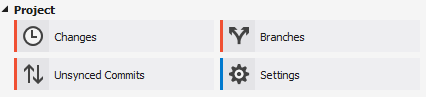Do a Git pull, by selecting “Unsynced Commits” and then “Pull”.
Download and uncompress the starting zip file for the exercise/assignment, and move the uncompressed content so it is located under your local Git repository directory.
Work on the exercise/assignment and commit & push your changes as often as you want.
To commit and push:
Important: make sure to commit and push your changes before ending your programming session.
Open VS and click on “New Project”. A new window appears. The three useful choices are:
Remember to fill in the name of your new project on the bottom. Rod Howell’s style is “RodHowell.CIS300.MyProjectName”. Technical note: actually, VS creates a “solution” that holds a “project” (a project is a C# package). It is possible to add a second project to the same solution: You do this by right-clicking on the solution name in the Solution Explorer window then then select ADD then NEW PROJECT. If you look at the folder structure that is created, you will find a folder holding the “solution” which holds two folders that are “projects” (C# packages). Be careful if you do this trick.
Click on green arrow to run app. Use the “View” menu to make visible key subwindows such as Toolbox, Solution Explorer, and Properties.
If you construct a new project that is a console application, you will receive a class that contains a Main method. From this point, you can code vanilla C#, say, like the examples in David Schmidt’s CIS200 notes from 2008. (Scroll to the bottom of the page for the relevant links.)
If you construct a new project that is a forms application, you will receive a class, Form1.cs that holds a C# form widget. You drag and drop widgets into it. Note that the default file names are “Form1.cs” and “Program1.cs”. You can change these. To do it, within Solution Explorer, right click on file name and use menu to change it, e.g., “Form1.cs” to “View.cs” or “uxForm.cs”.
If you are building a Forms App, click on the “Design” tab of “Form1.cs” to see the GUI layout. You can see the code by right-clicking on “Form1.cs” in the Solution Explorer window and selecting “View Code”, or you can double click on the GUI itself to see its code.
For more information, see MSDN’s Visual C# Tutorials article.
You can change size of a widget by dragging its borders. You can change its title by changing its “Text” value in the Properties window. There are a lot of properties for a widget (e.g., Size, Anchor); see the list of widgets and key properties below.
You add widgets to a GUI with the Toolbox. For example, go to Toolbox, select Toolstrip and then click on the GUI to drop the widget.
You can change the Properties of the toolstrip. (Click on the widget to activate its properties in the Properties window.) Each widget has a name, a font, a color, an anchor. (You can Anchor a button so that it does not float in the layout in its parent widget is resized.)
IMPORTANT: to change the var name of the widget in the source code, change the “(Name)” entry in its Properties list. Eg., Change “toolstrip1” to “uxToolStrip”.
Here are some widgets and key properties:
Each widget has a name, a font, a color, an anchor. You can Anchor a button so that it does not float in the layout in its parent widget is resized. In Toolbox, in Common Components, you can find tools like Web Browser, that you can select and insert. See www.dotnetperls for examples of other useful widgets.
It is also possible to add to Common Components a widget that someone else (or you) has written. Assume this widget is packaged as a .dll file. We won’t do much of that here, but check back to your CIS300 notes to see how Dr. Howell did this.
To add “the usual” event handler to a widget, double click on the widget in the GUI display. This generates an event-handler template in your class Form, and you insert type the handler code. For example, for a button named, uxHome,
private void uxHome_Click(object sender, EventArgs e) {
uxBrowser.GoHome(); // the code I added
}
This handles the button click by calling method GoHome in object uxBrowser.
IMPORTANT: there is a huge list of events associated with a widget. To see them, click on the widget and in the Properties window, click on the lightning bolt (“events”) to see all the events to which event handlers can be associated. You click on an event, and VS will generate the appropriate template for its handler.
You should read Rod Howell’s first few GUI-based assignments in CIS300 to get tips for using VS to build widgets.
To run an app, just press the green ▶ button on VS. But you can stop the program in the middle of execution and look at the values of its variables by using the debugger. Here’s how:
Set breakpoints: easiest way is to click to the left of the line where you want to step: click on the left vertical grey bar; a red blob will appear. Or, use cursor to select a line where you want to stop. Use DEBUG menu item and select TOGGLE BREAKPOINT. This marks the line (you will see a blob at the left of the line).
Now, use DEBUG, START DEBUGGING. The program will run and stop at the selected breakpoint. In the window at the bottom, you should see the values of the variables that are visible at the program point, and you will see the stack of unfinished method calls. (If you don’t see this stuff, select DEBUG, WINDOWS, LOCAL and also CALLSTACK and also AUTOS.) Click the green button to continue to the next breakpoint. (You can insert multiple breakpoints, of course. You can remove a breakpoint by clicking on its blob or by selecting it with the cursor and then use DEBUG, TOGGLE BREAKPOINT.)
You can also single-step (run-and-stop, one line at a time) using the “STEP INTO” menu item in DEBUG. Note the short-cut key for doing multiple steps. Step-into will enter called methods, too.
You can single-step but not enter called methods by selecting “STEP OVER”.
You can exit the currently active method and execute to the method’s call point by clicking “STEP OUT”.
About the debug windows: in addition to LOCALS and CALL STACK and AUTOS, you use WATCH to enter vars or exprs whose values you wish to query at each breakpoint. You can use the IMMEDIATE window as an expression interpreter that uses the current context at the current breakpoint.
For more information, see MSDN’s Debugging Managed Code article.
You can always type multiple classes in one and the same file, but this is not recommended.
using System;
using System.Collections.Generic;
using System.Linq;
using System.Text;
namespace Hello2 {
class Program {
static void Main(string[] args) {
new F().f();
}
}
class F {
public void f() {
Console.Write("Please type your name: ");
string input = Console.ReadLine();
}
}
}
It is usually better to have the extra class in another file but still listed as part of the same namespace. You do this:
Use the PROJECT menu, select ADD CLASS (or ADD COMPONENT, then ADD CLASS). This generates
using System;
using System.Collections.Generic;
using System.Linq;
using System.Text;
namespace Hello2 {
class Class2 {
}
}
that you fill in. (Remember, to rename Class2, just right-click on it in the Solutions window.)
Now you can use it in the other files of your project.
You create a stand-alone library class or classes by making a New Project that is a “Class Library”. The class in the previous example might be done like this:
using System;
using System.Collections.Generic;
using System.Linq;
using System.Text;
namespace FUtility {
public class F {
public void f() {
Console.Write("hello ");
string input = Console.ReadLine();
}
}
}
Once it is finished, use the BUILD SOLUTION menu item, listed under menu BUILD (or DEBUG).
To use your new class library in another program, do these steps: First, write the project that uses it:
using System;
using System.Collections.Generic;
using System.Linq;
using System.Text;
using FUtility; // IMPORTANT: add this line!
namespace ConsoleApplication1 {
class Program {
static void Main(string[] args) {
F ob = new F(); ob.f();
}
}
}
Notice the line, using FUtility. Next, in the PROJECT menu, choose ADD REFERENCE, and use the browser window to locate and select the class, labelled as a .dll file, e.g., HelloClass.dll. This links the external class to the project.
Note: you can also link to the class by right clicking on the “References” item in the Solution Explorer window.
Important: if the dll should not be edited by you, then link (add reference to) the dll file in the bin subfolder and not the “project” that generated the dll file. The latter step loads the source code into VS and lets you alter it!
C# has a built-in message box (dialog). Here is a link about how to construct them: http://www.dotnetperls.com/messagebox-show
Here’s an example:
DialogResult result = MessageBox.Show("Continue?", "Question", MessageBoxButtons.YesNo);
if (result == DialogResult.Yes) {
MessageBox.Show("You answered yes.");
}
MessageBox.Show("Click to exit.", "The End");
C# does not have an input dialog box, but you can make one from a form:
use VS to select PROJECT, ADD FORM (or ADD NEW ITEM then WINDOWS FORM). This adds a new form to your project. Use VS to add a textbox and a button to the new form. IMPORTANT: in the button’s properties, set its DialogResult to OK. (This makes the dialog finish when you click the button!)
Add an event handler for the button click, and add a method that later returns the text typed in the textbox:
public partial class MyDialog : Form {
private string x; // saves info typed in the text box
public MyDialog() {
InitializeComponent();
}
// ...
private void button1_Click(object sender, EventArgs e) {
x = textBox1.Text;
// Dispose(); // forces termination.
}
// call this later to obtain the text typed in the dialog:
public string getText() { return x; }
}
Whenever you need to use the dialog in the program, do this:
MyDialog dialog = new MyDialog();
DialogResult r = dialog.ShowDialog(); // pauses execution till dialog finishes
if (r == DialogResult.OK) {
// then extract text
string t = dialog.getText();
// ...
}
You can easily make a VS Form application so that its Form is “passive”, that is, it merely displays output data like a command window (and does not have buttons or text fields for input). This makes it easy to convert a console application into a Forms application.
First, create a new form and name it PassiveForm. Next, insert a label, call it label1, into PassiveForm. The label will be your “command window.” Next, add this method to class PassiveForm:
public void WriteLine(string s) {
label1.Text = label1.Text + "\n" + s;
Refresh();
}
Notice that the built-in method, Refresh, is called to redraw the updated form. You call WriteLine each time you want to generate a new line of output.
Also, if you plan to construct multiple instances of PassiveForm (maybe one form for each player in a game), then you must position each new instance so it does not overlap the others. Use static variables and PassiveForm‘s Location field like this:
public partial class PassiveForm : Form {
// coordinates for upper left corner of the visible passive form:
static int xPosition = 0;
static int yPosition = 0;
public PassiveForm() {
InitializeComponent();
}
private void PassiveForm_Load(object sender, EventArgs e) {
// set location of where to display the new passive form:
this.Location = new Point(xPosition,yPosition);
// update position coordinates for the next time a passive form is created:
xPosition = xPosition + this.Width;
yPosition = yPosition + 50;
}
// adds a new line of text, s, to the output:
public void WriteLine(string s) {
label1.Text = label1.Text + "\n" + s;
Refresh();
}
}
Now, change the Main method in the Forms application to look like this:
static void Main() {
Application.EnableVisualStyles();
Application.SetCompatibleTextRenderingDefault(false);
//Application.Run(new PassiveForm()); // DON'T GIVE CONTROL TO THE FORM !
// PLACE CODE HERE THAT CONSTRUCTS YOUR SYSTEM AND RUNS IT:
// As needed, here or elsewhere, construct passive form objects and use them:
PassiveForm f = new PassiveForm();
f.Show();
// ...
f.WriteLine("hello");
// ...
MessageBox.Show("Click to exit.");
}
You can generate as many passive forms as you want — they are merely objects that happen to have a visual presentation on your display. Here is an example, where there is a “main”, “active” GUI, Form1, and two passive forms:
static void Main() {
Application.EnableVisualStyles();
Application.SetCompatibleTextRenderingDefault(false);
PassiveForm f = new PassiveForm(); f.Show();
PassiveForm g = new PassiveForm(); g.Show();
// ...
f.WriteLine("hello");
// ...
g.WriteLine("hi");
// ...
Application.Run(new Form1(f, g)); // this would construct the "active"
// Form1 and give control to it.
// Notice that we altered Form1's constructor to receive the handles to
// the passive forms so that it can write to them as desired.
}
Say that you want to have two or more Forms that each have buttons that trigger computation when pressed. Here is how you change the Main method to do this:
static void Main() {
Application.EnableVisualStyles();
Application.SetCompatibleTextRenderingDefault(false);
// Say that Form1 has some buttons on it.
// We can construct two of it, and the the buttons on both forms
// are alive:
Form1 f = new Form1(); f.Show(); // remember to Show the form
Form1 g = new Form1(); g.Show();
Application.Run(); // there is no need for an argument to Run!
}
Now, even if you “kill” both of the above forms by pressing their X-buttons in the upper right corner of the forms, the program is “stuck” in its Run method, which is listening for events for all zero remaining forms. (Use Application.Exit() when you want to force all forms in the entire program to stop.)
It is also OK for a Forms App to start a “main form”, which itself constructs more forms. All the buttons on all the forms will be active.
Real-life systems are often running on multiple processors. We can learn about this form of behavior by creating one C# program that “splits” into multiple “threads” of execution. (In principle, each thread runs on its own processor.)
Here is our starter example: Say we want one application to generate two forms, each with its own thread of execution. Here’s how to rewrite Program.cs:
using System;
using System.Collections.Generic;
using System.Linq;
using System.Windows.Forms;
using System.Threading; // ADD ME
namespace TestWindow {
static class Program {
[STAThread]
static void Main() {
Application.EnableVisualStyles();
Application.SetCompatibleTextRenderingDefault(false);
new Thread(Driver1).Start(); // ADD ME
new Thread(Driver2).Start(); // ADD ME
MessageBox.Show("Forms started in their own threads");
//Application.Run(new Form1()); // no need for this
}
// ADD THESE PROCEDURES:
static void Driver1()
{ Application.Run(new Form1()); }
static void Driver2() {
{ Application.Run(new Form2()); }
}
}
The code generates two threads of execution (activation stacks, instruction counters); then it finishes the main thread and shows the message box.
Here are some references:
All of them encourage you to use a “thread delegate” construction when generating a new thread, e.g.:
using System;
using System.Threading;
class ThreadTest {
public void runme() { Console.WriteLine("runme called"); }
public static void Main() {
ThreadTest b = new ThreadTest();
Thread t = new Thread(new ThreadStart(b.runme));
t.Start();
}
}
I don’t know if this is safer than the naive version of threads that I already showed you.
Use the BUILD SOLUTION menu item (listed under either BUILD or DEBUG) to do this. Always do this when finishing a new Class Library (dll) project.
The C# compiler can be used standalone, from a command window, to compile and test programs and library components. The details can be found in David Schmidt’s CIS200 notes from 2008 — see the last four links on that page.
If you want a GUI for your C# program, then you are stuck using VS; it’s too much work to build a GUI by hand in C#. In contrast, other languages (e.g., Python) make GUI-building not so hard. (See the previous link.)
The components (classes) of a system should be tested individually (or in an order where the class to be tested depends only on classes that are already tested). This is called unit testing.
To unit-test a class, you can write code to construct it and call all its methods. The tests should make full use of the methods, fields, and their interactions. Place the tests in static methods and call them from Main. Here’s an example:
public class Clock {
private int t = 0;
public void tick() { t = t + 1; }
public int getTime() { return t; }
}
Here is a unit test:
public static void Main() {
// place unit tests here:
testClock();
}
public static void testClock() {
Clock c = new Clock();
for (int i = 0; i <= 20; i++) {
Console.WriteLine(c.getTime());
c.tick();
}
}
Now, if class Clock is already part of a Console Application, we revise the Main procedure to test it. But Clock might be coded in a Class Library (.dll) or a Form Application, which cannot be started by Main. In Java, we can insert Main into class Clock and execute Clock as an application! But C# won’t let us do this trick. So, we must generate a new project to hold Main.
A better way to do unit testing is to leverage VS testing framework. To do this, you need to create a Unit Test Project as follows:
Right-click on your solution in the Solution Explorer, select Add and then New Project.... It opens the Add New Project dialog window.
Under Visual C#, select Test and Unit Test Project, and then name your project, e.g., ClockUnitTest.
It should generate a test file:
using System;
using Microsoft.VisualStudio.TestTools.UnitTesting;
namespace ClockUnitTest {
[TestClass]
public class UnitTest1 {
[TestMethod]
public void TestMethod1() {
}
}
}
The [TestClass] attribute indicates that the class is part of the unit test suite of the project. Similarly, [TestMethod] indicates the method is a test method. You can have multiple test classes and test methods.
Add a reference to the project containing Clock by right-clicking the test project and selecting Add and Reference.... It opens the Reference Manager dialog window. Select the project containing Clock under Solution and Projects, then click OK.
Modify the test method to insert the test code, for example:
[TestMethod]
public void TestMethod1() {
Clock c = new Clock();
for (int i = 0; i <= 20; i++) {
Console.WriteLine(c.getTime());
c.tick();
}
}
To run or debug your tests, open the TEST menu and then either select Run or Debug, then All Tests. It opens Test Explorer that contains the status of each test methods (passing or failing).
For more information, see MSDN’s Verifying Code by Using Unit Tests article.
It is considered best practice if your test suite exercises all (non-test) code in your solution. Visual Studio has a code coverage analysis tool that can tell you if you are missing exercising certain parts of your code. You can run the code coverage analysis by selecting Analyze Code Coverage and All Tests under the TEST menu.
For more information, see MSDN’s Using Code Coverage to Determine How Much Code is being Tested article.
One can use Visual Studio test framework to test console app. This is done by redirecting Console.Out and Console.In to custom TextWriter (e.g., StringWriter) and TextReader (e.g., StringReader), respectively.
Below is an example to illustrate how one can test a console app.
using System;
using System.Collections.Generic;
using System.Linq;
using System.Text;
using System.Threading.Tasks;
namespace PrimeTool
{
// A simple prime tester console app
// (make sure the Program class visibility is public)
public class Program
{
// (make sure the main method visibility is public)
public static void Main(string[] args)
{
bool exit = false;
while (!exit)
{
int n = ReadPositiveInt("Enter a number:");
Console.WriteLine();
if (IsPrime(n))
{
Console.WriteLine(n + " is a prime!");
}
else
{
Console.WriteLine(n + " is not a prime!");
}
Console.Write("Do you want to exit (enter y to exit)? ");
exit = Console.ReadLine() == "y";
Console.WriteLine();
}
Console.ReadLine();
}
// reads a positive int from user input
public static int ReadPositiveInt(string msg)
{
int n = -1;
while (n < 0) // repeat until positive int input
{
Console.Write(msg + " ");
n = Int32.Parse(Console.ReadLine());
}
return n;
}
// from http://www.dotnetperls.com/prime
public static bool IsPrime(int candidate)
{
// Test whether the parameter is a prime number.
if ((candidate & 1) == 0)
{
if (candidate == 2)
{
return true;
}
else
{
return false;
}
}
// Note:
// ... This version was changed to test the square.
// ... Original version tested against the square root.
// ... Also we exclude 1 at the end.
for (int i = 3; (i * i) <= candidate; i += 2)
{
if ((candidate % i) == 0)
{
return false;
}
}
return candidate != 1;
}
}
}
using System;
using System.IO;
using Microsoft.VisualStudio.TestTools.UnitTesting;
namespace PrimeToolTest
{
[TestClass]
public class PrimeToolTest
{
// test IsPrime(2) directly
[TestMethod]
public void Num2Prime()
{
Assert.IsTrue(PrimeTool.Program.IsPrime(2));
}
// test prime tool console app on 2 using a script without expected output
[TestMethod]
public void ConsoleNum2Prime()
{
// @"" is a multi-line string
// the first line is "2" which will be entered for the number to test
// the second line is "y" which will be entered for exiting the app
test(@"2
y
", null);
}
// test prime tool console app on 3 using a script with expected output
// that it is a prime
// (be careful with white-space for the expected output)
[TestMethod]
public void ConsoleNum3Prime()
{
test(@"3
y",
@"Enter a number:
3 is a prime!
Do you want to exit (enter y to exit)?
");
}
// test prime tool console app on 4 and 55 using a script with expected output
// that it is not a prime
[TestMethod]
public void ConsoleNum4And55NotPrime()
{
test(@"4
n
55
y
",
@"Enter a number:
4 is not a prime!
Do you want to exit (enter y to exit)?
Enter a number:
55 is not a prime!
Do you want to exit (enter y to exit)?
");
}
// test utility method to run the prime tool app with
// a string script as input
void test(string script, string expectedOutput)
{
// save default Console.Out and Console.In
TextWriter cout = Console.Out;
TextReader cin = Console.In;
// redirect Console.Out to a StringWriter (buffer)
StringWriter sw = new StringWriter();
Console.SetOut(sw);
// set script as the app Console.In
StringReader sr = new StringReader(script);
Console.SetIn(sr);
// call the console app
PrimeTool.Program.Main(new string[0]);
// restore default Console.Out and Console.In
Console.SetOut(cout);
Console.SetIn(cin);
// close resources
sw.Close();
sr.Close();
// get the actual ouput
// if the expected output is null,
// then the test simply prints out the actual output (for debugging)
// otherwise, it asserts that the expected output is equal to the actual ouput
string actualOutput = sw.ToString();
if (expectedOutput == null)
{
Console.Write(actualOutput);
}
else
{
Assert.AreEqual(expectedOutput, actualOutput);
}
}
}
}
Visual Studio also supports UI testing by recording user input events (see MSDN’s Verifying Code by Using UI Automation article).
You will find additional helpful material at http://www.dotnetperls.com.
Below are three data structures that are hugely useful in practice.
Most of the time, the arrays you use will need to grow and shrink. That is, you want a list, not an array. Lists are implemented in C# by a library class, List. Here are two links for reference:
Here are the basic ideas:
using System;
using System.Collections.Generic;
class Program {
static void Main() {
List<int> list = new List<int>();
list.Add(2);
list.Add(3);
list.Add(7);
Console.WriteLine(list.Count); // prints 3
Console.WriteLine(list[2]); // OK to index like an array
foreach (int i in list) {
Console.WriteLine(i);
}
// Can add elements at any position and can remove them:
list.Insert(0, 2); // places the 2 at index 0 and shifts the rest
list.RemoveAt(list.Count - 1); // removed rightmost element
}
}
There are also operations for finding elements, slicing, etc.; see the first reference listed just above.
C# lists work well with the ListBox widget; see http://www.dotnetperls.com/listbox
When you want a data type that is a set of named values, e.g., the days of the week, or the suits of a deck of cards, you can define it with an enumeration type, which is a macro for a static class. Here is a decent reference:
http://www.dotnetperls.com/enum
The example shows what you need to know:
using System;
class Program {
enum Suit {Spades, Hearts, Diamonds, Clubs};
static void Main() {
Suit mycard = Suit.Hearts;
Console.WriteLine(mycard); // prints Hearts
Console.WriteLine((int)mycard); // prints 1
if (mycard == Suit.Hearts) {Console.WriteLine("ok");}
foreach (var suit in Enum.GetValues(typeof(Suit)))
{ Console.WriteLine(suit); };
Console.ReadLine();
}
}
A dictionary is the your secret weapon for quick table building. (Think of a dictionary as a hash table that is indexed like an array.) Thankfully, dictionaries are “almost built-into” C#. Try these:
static void Main(string[] args) {
// a dictionary mapping string keys to int values:
Dictionary<string, int> d = new Dictionary<string, int>();
d["flea"] = 1000;
d.Add("cat", 3);
d.Add("dog", 1);
Console.WriteLine(d["cat"]);
d["cat"] = d["cat"] - 1;;
Console.WriteLine(d["cat"]);
if (d.ContainsKey("cat")) { Console.WriteLine(d["cat"]); }
// how to traverse a dictionary:
foreach (var pair in d) {
Console.WriteLine("{0}, {1}", pair.Key, pair.Value);
}
// Store the keys in a List:
List list = new List(d.Keys);
// Loop through list:
foreach (string k in list) {
Console.WriteLine("{0}, {1}", k, d[k]);
}
Console.ReadLine();
}
Sometimes a method must call another method without knowing its name. Here is an example, a queue object that holds a list of tasks that must be completed once some signal occurs. The names of the tasks don’t matter — what matters is that each task is called. The code uses the C# delegate type and looks like this:
// defines a datatype, Task, which is the type of methods
// that take zero arguments and return no answer:
delegate void Task();
class TaskQueue { // holds a list of tasks to do
private List<Task> queue;
public TaskQueue() {
queue = new List<Task>(); // empty list
}
public void addTask(Task t) { queue.Add(t); }
// executes all queued tasks (methods) when signalled:
public void signal() {
foreach(Task t in queue) { t(); } // execute all the tasks
queue.Clear(); // empty queue all at once
}
}
The system can use a TaskQueue like this:
TaskQueue q = new TaskQueue();
Clock c = new Clock();
Clock d = new Clock();
q.addTask(c.tick);
q.addTask(d.tick);
q.addTask(c.tick);
// ... later ... :
q.signal(); // executes the queued ticks
where:
public class Clock {
private int t = 0;
public void tick() { t = t + 1; }
public int getTime() { return t; }
}
This technique is standard to operating-systems coding. It can also be used to save multiple event-handlers that are called when a single event is signalled:
delegate void ButtonClickHandler(object sender, EventArgs e);
public class Controller {
private List<ButtonClickHandler> handlers = new List<ButtonClickHandler>();
public void register(ButtonClickHandler h) { handlers.add(h); }
public void signal(object sender, EventArgs e) {
foreach (ButtonClickHandler h in handlers) { h(sender, e); }
}
}
Say we have a Form with a button, button1. We construct:
Controller c = new Controller();
and we tell Visual Studio to call ``c.signal`` when ``button1`` is clicked. Then, when the button is pressed, c.signal(..,..) executes and itself executes all methods saved in c‘s handlers list.
A disk file is found with its path, which is usually written as a string, e.g, C:\Users\Me\Documents\file.txt. You can also use a “relative path”, e.g., file.txt, which means find file.txt in the same folder where the program’s exe code lives. Another example: ..\..\..\file.txt which means find the file 3 folder-levels higher than where the program’s exe code lives. This is an OK path for data files for your VS Solution, because it is located at the top-level folder of the Solution. (Try the examples below with VS to see what I mean.)
Here are some examples that read and write text files:
// Write a string array to a file:
string[] stringArray = new string[] {"cat","dog","arrow"};
File.WriteAllLines("..\\..\\..\\file0.txt", stringArray);
// Write a long string to a file (note the \r\n to end each line):
File.WriteAllText("..\\..\\..\\file1.txt", "a \"cat\"\r\na dog\r\n");
// Read a text file into one long string:
string contents = File.ReadAllText("..\\..\\..\\file0.txt");
// Read lines of a text file into a string array:
string[] lines = File.ReadAllLines("..\\..\\..\\file0.txt");
// Read file's lines one by one:
StreamReader reader = new StreamReader("..\\..\\..\\file1.txt"));
string line = reader.ReadLine();
while ((line != null) {
Console.WriteLine(line);
line = reader.ReadLine();
}
reader.Close(); reader.Dispose();
// A more terse way of doing the previous loop:
StreamReader reader = new StreamReader("..\\..\\..\\file1.txt"));
string line;
while ((line = reader.ReadLine()) != null) {
Console.WriteLine(line);
}
reader.Close(); reader.Dispose();
// Write file's lines one by one:
StreamWriter writer = new StreamWriter("..\\..\\..\\file2.txt"));
foreach(string line in lines) {
writer.WriteLine(line);
}
writer.Close(); writer.Dispose();
Here are examples for disassembling a string into its parts:
string s = " <folder \"A.B.C\"> "; // string is <folder "A.B.C">
if (s.Contains("<folder")) { // ask if substring is found in s
Console.WriteLine("folder");
int start = s.IndexOf('\"'); // find " starting from index 0 in s
int end = s.IndexOf('\"', start+1); // find " starting from index start+1
Console.WriteLine(start + " " + end); // writes 9 15
// extract substring: Substring(startIndex, LengthToExtract) :
string path = s.Substring(start + 1, (end - start) - 1);
Console.WriteLine(path); // writes A.B.C
// split a string into pieces, where '.' is the separator char:
string[] names = path.Split('.');
foreach (string n in names) { Console.WriteLine(n); }
}
Here are references that might help:
Before you do much work with VS or any editor, you should draw a blueprint of the system you will build. Use the class-diagram language from UML to draft your components.
There is a reasonable introduction to the class-diagram language at http://www.cs.sjsu.edu/~pearce/modules/lectures/uml/class/index.htm.
Here is a link with some useful tips: http://www.csci.csusb.edu/dick/cs201/uml.html.
The complete notation is overwhelming. We will use these parts:
We will use these forms of associations (but there are many more!):
Dependency (coupling, or association/dependency in Visual Studio): “A refers to B”, or “A needs B to compile correctly”. Say we write a class Form1, and it depends on a class Clock, which we also coded. (Perhaps, when its button is pressed, the Form1 asks Clock for the time.) The coding might be this:
public class Clock {
// ...
private int time;
public int getTime() { ... }
}
public class Form1 {
private Button button1; private Label label1;
private Clock cl;
public Form1(Clock c) { cl = c; ... }
// ...
public void onClick() { ... cl.getTime() ...}
}
A class diagram summarizes the design of what we coded. It looks like this:
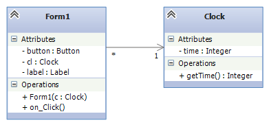Within Form1, the handle to the Clock is named by the private field var, cl. (The tiny - sign means private.) Form1 has a reference to exactly one clock, and for this reason, the arrow to Clock is labeled by a 1 at the head, called a multiplicity (“how-many-multiples”); * means zero or more. that is, we allow Clock to be referred by multiple Form1 objects or none. Notice that Form1 did not create the Clock, it does not own it; if Form1 dies, Clock remains. “Form1 refers to the Clock.”
There is a small variation on the above diagram, where the private fieldname, cl, is moved to the arrow as a label, like this:
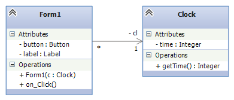As stated previously, a private variable is labeled by a minus sign, -. You will see labelled arrows used a lot in practice — remember that the label is actually a fieldname!
Notice that Form1 also holds fields button1: Button and label1: Label. Now, Button and Label are classes, too, and if we truly wanted, we could draw class boxes for them. But since we did not write those classes, and since we do not need to show how class Button or Label connect to other classes, we just leave the Button and Label inside Form1.
IMPORTANT: Say that Form1 does not remember the reference to Clock within its own field. (Maybe it gets the handle to Clock through a parameter to a method call, e.g. onClick(c: Clock) is used in the diagram below). Clearly, Form1 still needs Clock to compile. We use a dashed arrow, like this:
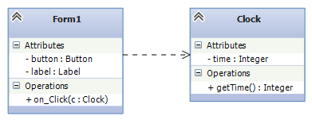The fieldname is gone.
Composition: “A owns B” or “B is part of A” or “if A dies, so does B”. This is a stronger form of dependency and can occur when A constructs B or when B was constructed and given to A to own. Say that a customer might own an account in a bank’s data base:
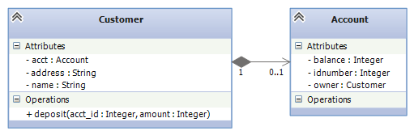The diamond should be solid black. Here is the same relationship, but the fieldnames are placed as labels on the arrow:
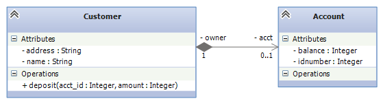You can draw it as you wish.
The multiplicities can be 1, 2, ..., n..m (n upto m), * (zero or more). To indicate that the fieldname label is an array/collection, put it in braces:
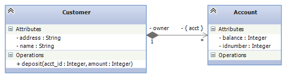The code for the above design might look like this:
public class Account {
private int balance;
private int idnumber;
// ...
}
public class Customer {
private string name; private string address;
private Account[] accts;
// ...
public void deposit(int acct_id, int amount) { ... }
}
Aggregation: There is also a “white diamond” that is used when there is an array (aggregate) field but there is only dependency and not ownership. For example, a “hand” object holds handles to some card objects, but the “hand” doesn’t own the cards. (Maybe a “card deck” object owns the cards):
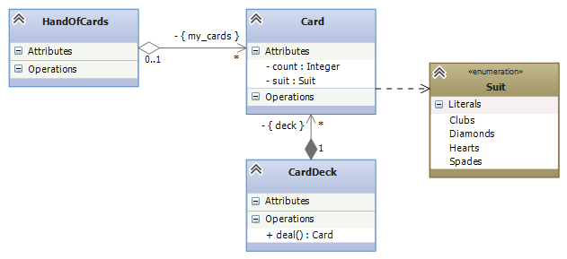Subclass (“generalization”): use a big “white” arrowhead with a solid line:
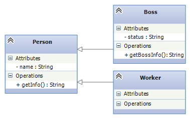Here, both Boss and Worker are subclasses of class Person.
Implement an interface (“realization”): use a big “white” arrowhead with a dashed line, say when Person is an interface, not a class:
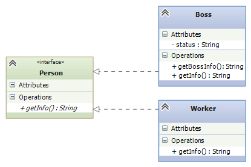Static methods and variables are underlined, and code snippets and related information can be attached as comments:
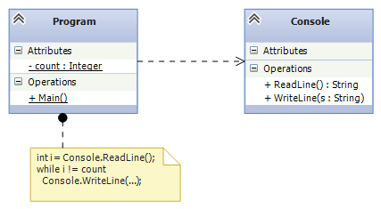When we construct “use-case realizations”, we will use Collaboration Diagrams, which show the objects constructed from class diagrams and the order in which they call one another.
Visual Studio 2013 Ultimate supports creating and editing UML diagrams. Here is a good reference:
http://msdn.microsoft.com/en-us/library/dd409445.aspx
This note was adapted from David Schmidt's CIS 501, Spring 2014, Lecture 0 course note. © Copyright 2014, David Schmidt.